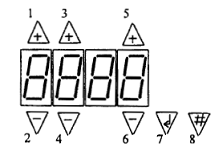
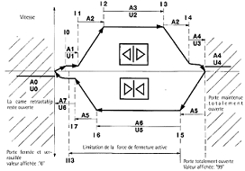

RCF 1
___________________________

| (a) Selection type de paramètres(b) U=Vitesse(c) A=couple(d) l=Position(e) - =Mode opératoire/Paramètre de la porte(f) ll=Type de logique des sorties et autres paramètres | |
| Choix du paramètre | |
| Modification de la valeur du paramètreEn "Mode apprentissage automatique",une ouverture de porte et le comptage des impultions sont réalisés en maintenant le bouton 5 enclenchéEn "Mode manuel",les commandes"ouverture porte"et"fermeture porte"seront données | |
| Chargement des valeurs du paramètre montrées sur les afficheursAppuyer sur le bouton pendant 2sec minimun | |
| Chargement des paramètres préréglés en usineRester en appui pendant la mise sous tension de l'équipement | |
| Commutation du"Mode fonction"au "Mode insertion"Rester en appui sur les 2 boutons ensemble pour plus d'1sec | |
| Activation du"Mode d'apprentissage automatique"du cycle |
___________________________

| Vitesse théorique en position finale de fermeture(les vantaux poussent sur le côté battu) | |
| ....pendant le dévérouillage | |
| ....pendant l'ouverture de la porte | |
| ....en se rapprochant de la position finale | |
| Vitesse théorique en position finale d'ouverture(les vantaux poussent sur le côté battu) | |
| ....pendant la fermeture | |
| ....en se rapprochant de la position finale et au vérrouillage de la serrure | |
| ....en phase de nudge ou d'apprentissage automatique du cycle | |
| ....quand la porte est fermée | |
| ....dans la zone d'ouverture de la came rétractable | |
| ....pour l'accélération et la décélération en ouverture | |
| ....pendant l'ouverture | |
| ....en se rapprochant de la position limite en phase d'ouverture et avec porte complétement ouverte | |
| ....pour l'accélération et la décélération en fermeture | |
| ....pendant la fermeture | |
| ....en se rapprochant de la position limite | |
| ....en phase d'apprentissage automatique du cycle | |
| Du début de la vitesse de dévérouillage | |
| du début de l'accélération en ouverture | |
| du début de la vitesse constante en ouverture | |
| du début de la décélération en ouverture | |
| du début de la vitesse réduite en ouverture | |
| du début de la vitesse constante en fermeture | |
| du début de la décélération en fermeture | |
| du début de la vitesse réduite en fermeture | |
___________________________
| Durée de l'impultion de freinage à la fin de la fermeture en position"I7":Exprimée en unité de 15 miliseconds | |
| Durée de l'impultion de freinage à la fin de l'ouverture en position"I4":Exprimée en unité de 15 miliseconds | |
| Sensibilité en phase de vitesse constante | |
| Sensibilité pendant la fermeture en phase de décélération | |
| Point de désenclenchement de la limitation de la force de fermeture | |
| Temps de couple en porte verrouillée ou en butée,le couple se réduit en se portant à la valeur de A9.Pour sésenclencher cette fonction donner la valeur 99 au paramètre II2 | |
| Couple réduit.C'est la paramètre représentant le couple que dégage le moteur aprés une permanence en condition de vérrouillage ou en butée pour un temps supérieur à II2 | |